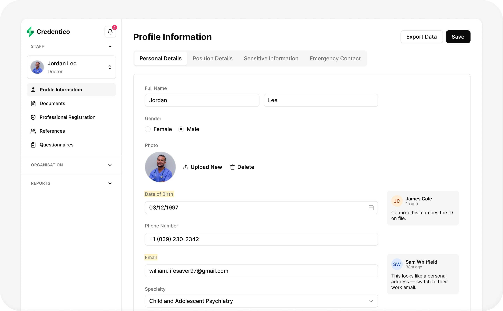
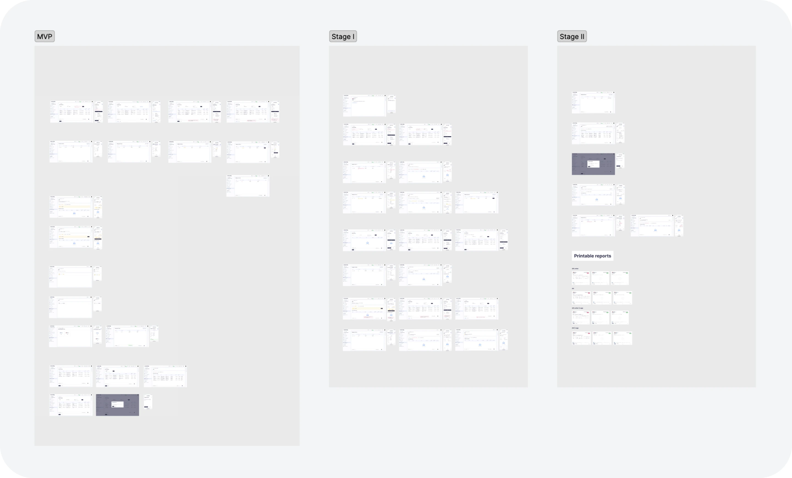
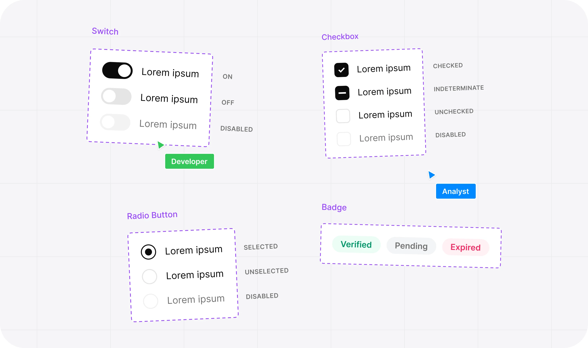
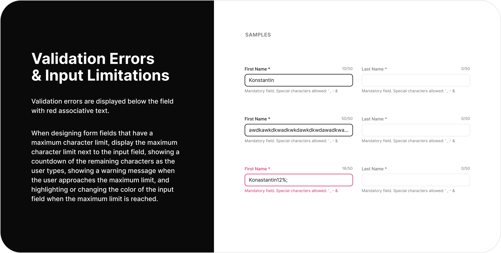
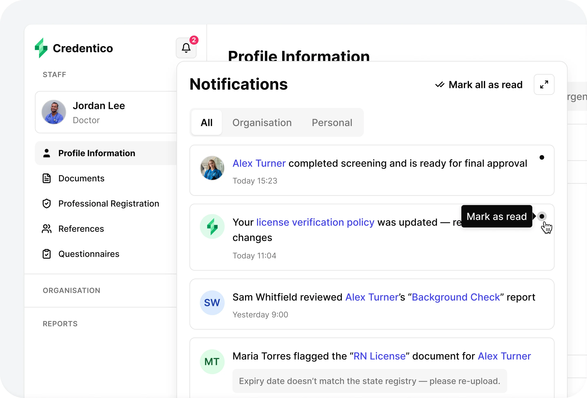
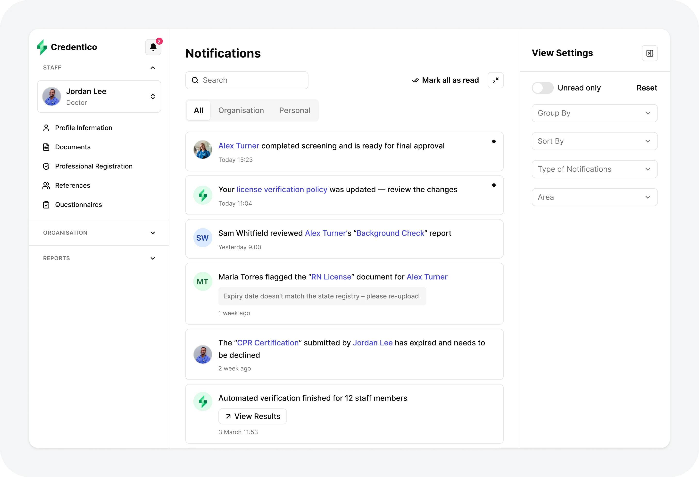
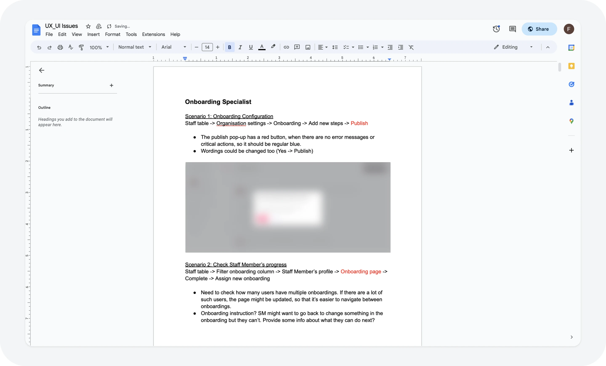
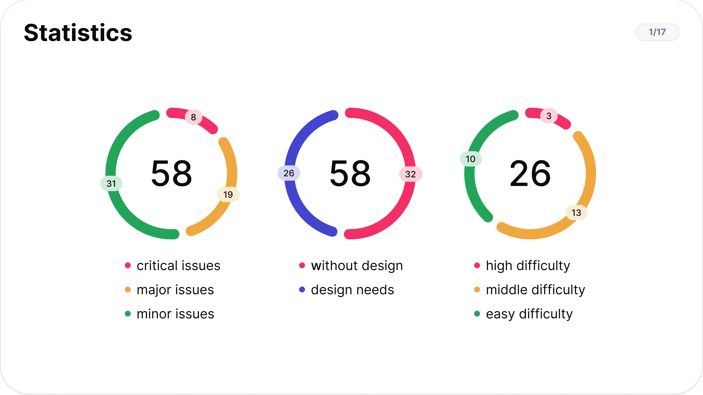
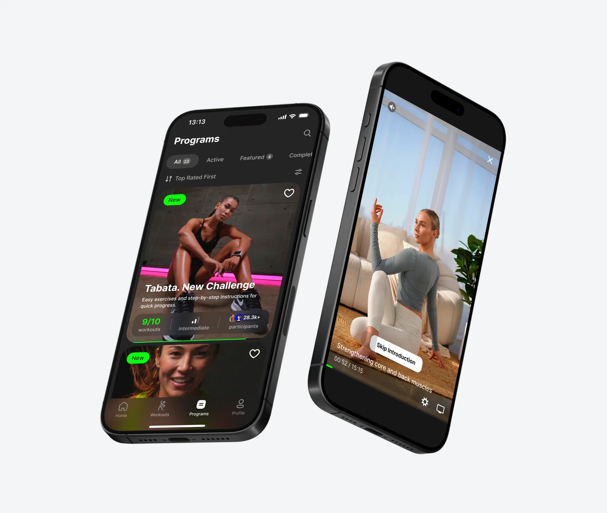

SaaS for HR managers and recruiters in healthcare — it verifies that staff are qualified and walks them through onboarding up to their first day at work
The task
Take the product into the US market: build a UX approach that holds up against different rules in every state.
Results
2.3× faster candidate screening at a major client after the automation shipped.
Context
The product is a platform for healthcare organisations. It holds staff profiles: documents, professional registrations, references and questionnaires. An HR manager checks that a person is licensed to practise and takes them through onboarding up to their first day at work.
The cost of a mistake is high: letting someone work without a valid licence is a regulatory risk for the whole clinic. That is why the check is slow — and why every part of it that can be automated saves the client weeks.

The problem
The company was preparing to enter the US market, where requirements differ because of regulation: every state has its own rules, licensing bodies and exceptions.
At the same time the product kept growing and new functionality kept arriving. Decisions were made case by case, there was no shared language between parts of the product — and the more scenarios the new market brought, the more expensive that inconsistency became.
It all came down to one job: create a single UX approach that absorbs the differences between states while keeping the experience simple and consistent.
Adapting to the US market
The product grew in iterations, each with its own set of scenarios and screens. I worked closely with the analysts and the product team to understand the business scenarios and find the best solutions.
Once the data was in, I developed design concepts and checked them against technical constraints and what was feasible to build, together with the engineers.
After changes went to production I ran design reviews, comparing what shipped with the experience we had planned.

Building the design system
To keep that many screens from drifting apart between stages, we needed a shared foundation. As the product grew we decided to build and roll out a full design system. It streamlined development, kept the experience consistent for users, and made collaboration between designers, engineers and analysts easier.

A portal was built that collects and structures every component, the documentation and the core UI/UX rules. It describes the product's design language, how each component should be used, and the exceptions.

New functionality: the notification centre
New functionality was then built on top of that system. The largest piece I worked on was the design of the notification centre.
Notifications used to arrive by email only, which made it impossible to react quickly: in a process where a candidate's status changes dozens of times, small delays add up to days. So we decided to build a notification centre where people get everything they need to know about changes in the system, fast.

The notification centre opens from an icon in the left menu. The dropdown gives a quick look at the latest notifications: they can be marked as read and acted on.
There is also a full notification centre page with a wider set of tools — for the times when you need to work through a backlog rather than react to a single event.

UX review
At a later stage I helped the lead designer run an expert UX review of what had been built.
Using client survey results we identified the key user roles and the most important scenarios, then analysed the current experience against them. Across the product we found 142 problems.
My job was to organise and prioritise them by effort and by impact on the user experience.

We presented the results to the team in a joint session and discussed the problems we had found, their impact on the experience and where the product could go next.
We then checked the priorities against the roadmap, estimated the effort and turned it into a backlog: 89 of the 142 problems became the basis of the UX strategy and the redesign roadmap.

Results
Candidate screening became 2.3× faster at one of the major clients — the combined effect of the automation shipped in that release. For the client's recruiting team it meant a visible jump in throughput with the same headcount.
The design system and the documentation portal became common ground for designers, engineers and analysts — the rules and exceptions no longer lived only in people's heads.
The UX review turned into a prioritised backlog: 89 of the 142 problems became the basis of the UX strategy and the redesign roadmap.
Other cases
Kommo (formerly amoCRM)
How a single activation framework raised trial → subscription conversion by 4% in an enterprise CRM with 1M+ MAU

AdTech platform
How redesigning the wizard cut the core flow from 14 to 8 minutes and helped close deals with Farfetch and Target

Fitness app
Launched a fitness app for an influencer with an audience of 2M+ followers
